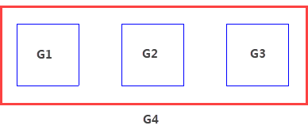
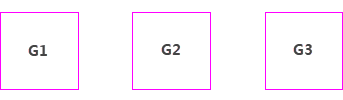
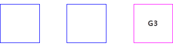
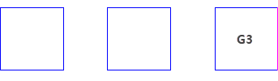
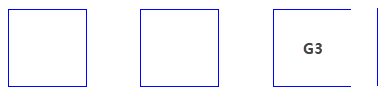
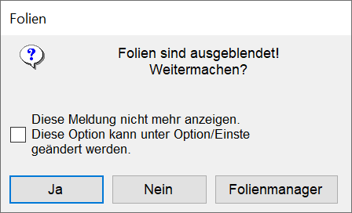

Auswählen von anwenderdefinierten Gruppen und deren Zeichenelementen.
·Gruppen sind hierarchisch gegliedert. Die Obergruppe vererbt vorgenommene Änderungen auf alle Untergruppen, wie z. B. Status = gesperrt/nicht gesperrt, eine Änderung des Maßstabs oder der Stiftfarbe.
·Wenn eine Gruppe nicht selektiert oder nur teilweise selektiert wird, kann es daran liegen, dass Elemente im Elemente-Filter ausgeschlossen sind. Prüfen Sie auch, ob die Elemente bzw. deren Folien im Folienmanager gesperrt sind.
·Gruppen und einzelne Gruppenelemente bilden nach dem Kopieren mit [Konst 1 | Kopier] und Duplizieren mit [Konst 2 | Dupliz] eine neue Gruppe. Der Gruppenname und die Beschreibung werden dabei aus der ursprünglichen Gruppe übernommen. Im Gruppenmanager können Sie alle erzeugten Gruppen einsehen und den Gruppennamen und die Beschreibung ändern.
Um eine Gruppe auszuwählen
§Wählen Sie die Gruppe mit einem Linksklick aus.
Wenn Sie den Cursor über ein Gruppenelement bewegen, wird die gesamte Gruppe hervorgehoben.
§Bestätigen Sie die Auswahl mit Rechtsklick.
Um Untergruppen und einzelne Elemente innerhalb einer Gruppe auszuwählen
Sie können Untergruppen und einzelne Elemente in einer Gruppe auswählen.
Auswahl per Strg-Taste
Bei dieser Auswahlfunktion wählen Sie einzelne Elemente innerhalb von Gruppen aus.
§Wählen Sie eine Funktion, z. B. Verschieben.
§Drücken Sie die Strg-Taste und führen Sie einen der folgenden Schritte aus:
a)Klicken Sie ein oder mehrere Elemente nacheinander an.
b)Ziehen Sie einen Rahmen um die Elemente. Wenn Sie den Rahmen von links nach rechts aufziehen, werden nur Elemente ausgewählt, die sich vollständig im Rahmen befinden. Ziehen Sie den Rahmen umgekehrt auf, dann werden auch Elemente ausgewählt, die vom Rahmen angeschnitten werden.
Sie können Elemente wieder abwählen, indem Sie auf Entfer umschalten und bei gedrückter Strg-Taste die Elemente aus der Auswahl entfernen.
§Bestätigen Sie die Auswahl mit Rechtsklick.
Auswahl per Mehrfachklick
Bei dieser Auswahlfunktion führt Sie jeder Klick eine Ebene tiefer in der Gruppenhierarchie.
Beispiel: |
|
 |
Die Gruppen G1, G2 und G3 sind in der Gruppe G4 zusammengefasst. Daraus ergibt sich die folgende Gruppenhierarchie: + G4 (Obergruppe) -G1 (Untergruppe) -G2 (Untergruppe) -G3 (Untergruppe) |
 |
Ein Klick auf ein Gruppenelement selektiert alle Untergruppen der Gruppe G4. Die angeklickten Elemente werden in der Farbe für "Markieren" [Option | SysDat | Farbeinstellungen | Konstruktionsprogramm → Markieren] dargestellt. |
 |
Ein weiterer Klick auf die Untergruppe G3 markiert diese. Diese Untergruppe kann jetzt unabhängig von anderen Untergruppen bearbeitet werden. Das Ergebnis entspricht der Auswahl per Strg + Aufziehen eines Rahmens um die Gruppe. |
 |
Ein weiterer Klick auf ein einzelnes Element der Untergruppe G3 markiert dieses. Dieses Zeichenelement kann unabhängig von anderen Gruppenelementen bearbeitet werden. Das Ergebnis entspricht der Auswahl per Strg + Klick auf die Linie. |
 |
Verschobene Einzellinie innerhalb der Untergruppe G3. |
Gruppen und Folien
Wenn Sie zur Bearbeitung eine Gruppe auswählen, die Elemente auf ausgeblendeten Folie enthält, erhalten Sie die folgende Meldung:
 |
·Wenn Sie auf Ja klicken, wird die Aktion fortgesetzt und die ausgeblendeten Elemente werden bei der Bearbeitung nicht berücksichtigt.
·Wenn Sie auf Nein klicken, wird die Aktion abgebrochen und Sie können eine andere Funktion auswählen.
·Wenn Sie auf Folienmanager klicken, wird der Dialog Folienmanager geöffnet. Sie können die Elemente auf den Folien einblenden, die bei der Bearbeitung berücksichtigt werden sollen.
Zugehörige Aufgaben:
Zugehörige Referenzen: